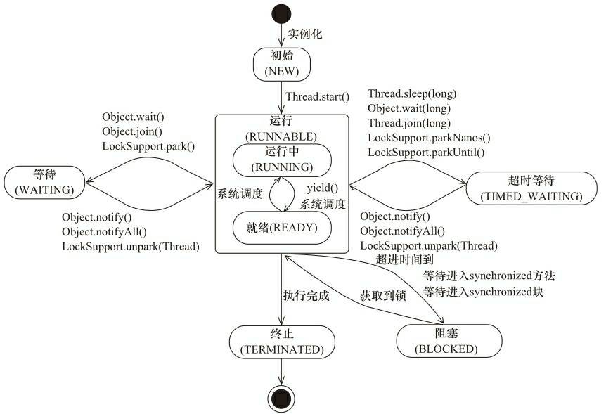

线程的概念
不论是在 Java 或者 Android 编程过程中，我们经常和线程打交道。线程可以理解为在进程中独立运行的子任务。一个进程中正在运行时至少会有一个线程运行，当然也可以同时运行多个子线程，即我们平时说的多线程的概念。 那么使用多线程有什么优点呢？使用多线程时这些线程可以同时运行，可以最大限度的利用CPU的空闲时间来处理其它任务，系统的运行效率大大提升。
线程的状态
线程状态的定义在 Thread 类的 State 枚举中：
public enum State {
NEW,
RUNNABLE,
BLOCKED,
WAITING,
TIMED_WAITING,
TERMINATED;
}
线程有6种状态：
- 新建状态(NEW)：线程对象被创建后，就进入了新建状态。例如，Thread thread = new Thread()。
- 运行状态(RUNNABLE)：Java 中把就绪状态和运行中状态笼统称为运行状态。
- 就绪状态(Runnable)：也被称为“可执行状态”。线程对象被创建后，其它线程调用了该对象的start()方法，从而来启动该线程。例如，thread.start()。处于就绪状态的线程，随时可能被CPU调度执行。
- 运行中状态(Running)：线程获取CPU权限进行执行。需要注意的是，线程只能从就绪状态进入到运行状态。
- 阻塞状态(BLOCKED)：表示线程阻塞于锁，比如线程在获取synchronized同步锁失败(因为锁被其它线程所占用)，它会进入同步阻塞状态。
- 等待状态(WAITING)：表示线程进入等待状态，比如调用 wait()方法，进入该状态表示当前线程需要等待其他线程做出一些特定动作（通知或者中断）才能退出这个状态
- 超时等待状态(TIMED_WAITING)：可以在指定的时间自行返回
- 终止状态(TERMINATED)：线程执行完了或者因异常退出了run()方法，该线程结束生命周期。

从上图中可以看到，线程创建之后，调用 start() 方法开始运行。 当线程执行 wait() 方法之后，线程进入等待状态。进入等待状态的线程需要依靠其他线程的通知或者调用 interrupt 方法才能返回到运行状态，而超时等待状态相当于在等待状态基础上增加了超时机制，也就是超时时间到达时会返回到运行状态。 等待状态下的线程不会被分配CPU执行时间，它们要等待被显式地唤醒，否则会处于无限期等待的状态。 超时等待状态下的线程也不会被分配CPU执行时间。在达到一定时间后它们会自动唤醒。 当线程调用同步方法时，在没有获取到锁的情况下，线程会进入到阻塞状态。 线程在执行 Runnable 的 run() 方法之后将进入到终止状态。
创建线程
创建线程的方法有多种，下面逐一来分析一下。
继承 Thread 类
实现一个继承 Thread 的类，并实现其 run 方法：
{
MyThread thread = new MyThread();
thread.start();
}
public class MyThread extends Thread{
@Override
public void run() {
Log.e("Test","run my thread");
}
}
实现 Runnable 接口
如果要创建的线程类已经有父类来，那么我们就不能通过继承 Thread 类的方式来创建线程来，因为 Java 是不支持多继承的。那么这种情况下我们可以实现 Runnable 接口的方式来创建线程。
该如何使用呢？我们先来看一下 Thread 类的几个构造函数：
- Thread()
- Thread(Runnable target)
- Thread(ThreadGroup group, Runnable target)
- Thread(String name)
- Thread(ThreadGroup group, String name)
- Thread(Runnable target, String name)
- Thread(ThreadGroup group, Runnable target, String name)
- Thread(ThreadGroup group, Runnable target, String name, long stackSize)
一共提供来这8个构造函数，其中第2、3、6、7、8构造方法都一个 Runnable 参数，这个参数会通过 init() 方法赋值给成员变量 target，然后会在 run() 方法中调用：
@Override
public void run() {
if (target != null) {
target.run();
}
}
因此只要通过构造方法把 Runnable 赋值给 target，可以运行一个线程。
{
Thread thread = new Thread(new MyRunnable());
thread.start();
}
public class MyRunnable implements Runnable{
@Override
public void run() {
Log.e("Test","run my thread");
}
}
另外需要说明一点是 Thread 类也是实现类 Runnable 接口的：
public class Thread implements Runnable {
}
那也就是说构造函数 Thread(Runnable target) 不光可以传 Runnable 对象，还可以传 Thread 对象，这样做就是把 Thread 的 run() 方法交给其它线程进行调用。
使用 Callable、Future 或者 FutureTask
前面我们介绍了通过继承 Thread 类和实现 Runnable 接口的方式来创建线程，但是这两种方式都无法解决两个问题：
- 无法在任务完成后直接获取执行结果
- run 方法无法抛出异常，因为在
Thread和Runnable的run方法中没有抛出异常，重写的 run 方法自然也无法抛出异常
从Java 1.5开始提供了 Callable 和 Future 两个接口，通过这两个接口来进行并发编程，能解决上面提到的两个问题。
Callable 和 Future
public interface Callable<V> {
V call() throws Exception;
}
Callable 接口只声明了一个 call()，类似 Runnable 接口，作为线程的执行方法存在，它是可以抛出异常的，而且有返回值。
再来看一下 Future 接口，它的作用是拿到 Callable 的执行结果：
public interface Future<V> {
//取消任务的执行。参数指定是否立即中断任务执行，或者等等任务结束
boolean cancel(boolean mayInterruptIfRunning);
//任务是否已经取消，任务正常完成前将其取消，则返回 true
boolean isCancelled();
//任务是否已经完成。需要注意的是如果任务正常终止、异常或取消，都将返回true
boolean isDone();
//等待任务执行结束，然后获得V类型的结果。InterruptedException 线程被中断异常， ExecutionException任务执行异常，如果任务被取消，还会抛出CancellationException
//该方法具有阻塞性，如果调用该方法时任务没有完成，则会阻塞直到执行完成
V get() throws InterruptedException, ExecutionException;
//同上面的get功能一样，多了设置超时时间。参数timeout指定超时时间，uint指定时间的单位，在枚举类TimeUnit中有相关的定义。如果计算超时，将抛出TimeoutException
V get(long timeout, TimeUnit unit)
throws InterruptedException, ExecutionException, TimeoutException;
}
我们一般来使用 ExecutorService 接口来配合 Callable 和 Future 的使用。
ExecutorService 声明了下面几个重载的 submit 方法：
<T> Future<T> submit(Callable<T> task)<T> Future<T> submit(Runnable task, T result)Future<?> submit(Runnable task)<T> List<Future<T>> invokeAll(Collection<? extends Callable<T>> tasks)
那么我们这里又发现，其实通过 ExecutorService 和 Future，Runnable 也可以被包装成一个 Callable 来使用，但是在使用过程中你会发现，这个返回值似乎没什么作用，我们知道 Runnable 的 run 方法并不能返回结果，而且在运行过程中又不能操作 result，通过源码我们也发现，返回的结果就是我们传进去的参数 result，并未做修改。
下面运行一个例子来熟悉一下它们的用法：
public void testFuture() {
ExecutorService threadPool = Executors.newSingleThreadExecutor();
Future<Integer> future = threadPool.submit(new Callable<Integer>() {
public Integer call() throws Exception {
Log.e("Test","start thread1");
Thread.sleep(2000);
Log.e("Test","end thread1");
return 100;
}
});
Log.e("Test","main thread");
try {
Thread.sleep(3000);
Log.e("Test","get result");
Log.e("Test","result = "+future.get());
} catch (InterruptedException e) {
e.printStackTrace();
} catch (ExecutionException e) {
e.printStackTrace();
}
}
运行结果：
22:20:39.918 E/Test: main thread
22:20:39.918 E/Test: start thread1
22:20:41.920 E/Test: end thread1
22:20:42.920 E/Test: get result
22:20:42.920 E/Test: result = 100
下面我们来测试一下 Future.get 方法的阻塞性。我们把主线程的 Thread.sleep(3000); 去掉，来看一下执行结果。
22:24:04.899 E/Test: main thread
22:24:04.899 E/Test: get result
22:24:04.899 E/Test: start thread1
22:24:06.900 E/Test: end thread1
22:24:06.902 E/Test: result = 100
确实是阻塞在 get 方法这里，子线程执行完之后才会接着执行。
FutureTask
接下来再来看一下 FutureTask，先来看一下它的继承关系。
public class FutureTask<V> implements RunnableFuture<V> {
}
public interface RunnableFuture<V> extends Runnable, Future<V> {
void run();
}
相当于 FutureTask 同时实现了 Runnable 和 Future 接口，那么就兼具他们的特性。
FutureTask 除了像上面的例子一样结合 Callable 和 ExecutorService 使用，也可以像 Runnable 一样结合 Thread 使用。
public void testFutureTask() {
FutureTask<Integer> futureTask = new FutureTask<Integer>(new Callable<Integer>() {
@Override
public Integer call() throws Exception {
Log.e("Test","start thread1");
Thread.sleep(2000);
Log.e("Test","end thread1");
return 100;
}
});
Log.e("Test","main thread");
new Thread(futureTask).start();
try {
Log.e("Test","get result");
Log.e("Test","result = "+futureTask.get());
} catch (InterruptedException e) {
e.printStackTrace();
} catch (ExecutionException e) {
e.printStackTrace();
}
}
运行结果：
22:35:12.488 E/Test: main thread
22:35:12.488 E/Test: get result
22:35:12.488 E/Test: start thread1
22:35:14.489 E/Test: end thread1
22:35:14.496 E/Test: result = 100
终止线程
首先我们会发现 Thread 有个 stop 方法，但是这个方法是个废弃的方法，直接调用会抛出 UnsupportedOperationException() 异常。 我们可以通过 interrupt() 来进行，但是这个方法本身不会使线程中断执行，它只是修改了被调用线程的中断标记位。然后可以再被调用的线程中通过Thread.currentThread().isInterrupted()来获取当前线程的中断状态，如果该状态为true，则可以做出响应的中断响应。 在Java中的Thread.sleep()、Object.wait()、BlockingQueue.put()、BlockingQueue.take()等等方法中，实现了对中断的响应处理，当线程正在执行这些方法时，interrupt()被执行后，线程会清除当前中断状态，设置为false，然后抛出InterruptedException异常，中断当前的状态（比如阻塞状态）。
Thread 类
下面来看一些 Thread 类的方法。
setPriority
我们在使用 Thread 时，可以使用 setPriority 方法来设置线程的优先级，线程的优先级分为1-10这10个等级，数值越大，优先级越高。如果小于1或大于10，则抛出 IllegalArgumentException 异常，默认是5。
线程的优先级仍然无法保障线程的执行次序。只不过，优先级高的线程获取CPU资源的概率较大
yield
yield() 可以使当前线程从“运行状态”变“就绪状态”，调用该方法后，该线程就会把CPU时间让掉，让其他或者自己的线程执行（也就是谁先抢到谁执行）。
join
join()方法可以使得一个线程在另一个线程（调用 join 方法的线程）结束后再执行。如果join()方法在一个线程实例上调用，当前运行着的线程将阻塞直到这个线程实例完成了执行。比如在线程t1运行过程中调用了线程t2的 join 方法，那么 t1 线程就会在此处进入阻塞状态，知道 t2 线程运行结束再继续执行。
sleep
sleep 方法的作用是让当前线程休眠，即当前线程会从“运行状态”进入到“休眠(阻塞)状态”。sleep()会指定休眠时间，线程休眠的时间会大于/等于该休眠时间；在线程重新被唤醒时，它会由“阻塞状态”变成“就绪状态”，从而等待cpu的调度执行。 sleep 和 Object 对象的 wait 方法区别：它们都可以使当前线程由“运行状态”进入到“休眠(阻塞)状态”。但是，wait()会释放对象的同步锁，而sleep()则不会释放锁。
interrupt
设置线程的中断标记位。注意，interrupt 并不能终止线程的执行，如果线程在调用 wait、sleep、join方法处于阻塞状态，那么调用它的 interrupt 方法后，该线程会抛出一个 InterruptedException 异常，并中断阻塞状态。 如果线程想中断执行退出，那么就要在 run 方法中查询 isInterrupted() 来决定是否退出。
setUncaughtExceptionHandler
设置该线程由于未捕获到异常而突然终止时调用的处理程序。通过明确设置未捕获到的异常处理程序，线程可以完全控制它对未捕获到的异常作出响应的方式。
在多线程中，run()方法无法继续向上显式抛出异常，因此我们可以通过这种方式来捕获线程内运行时发生的异常。
Thread thread = new Thread(new Runnable() {
@Override
public void run() {
int a = 10/0;
}
});
thread.setUncaughtExceptionHandler(new Thread.UncaughtExceptionHandler() {
@Override
public void uncaughtException(Thread t, Throwable e) {
Log.e("Test","error1",e);
}
});
thread.start();
这样就把由于除数为0而抛出的 java.lang.ArithmeticException 异常捕获，而不会发生崩溃行为。
setDefaultUncaughtExceptionHandler
设置当线程由于未捕获到异常而突然终止时所调用的默认处理程序。 这个是个静态方法，那么它和上面的 setUncaughtExceptionHandler 方法有什么不同呢？ 由于它是静态方法，因此设置的所有线程的异常处理程序。 未捕获到的异常处理首先由线程对象自身控制，然后由线程的 ThreadGroup 对象控制，最后由未捕获到的默认异常处理程序控制，也就是上面我们设置的默认处理程序。 ThreadGroup 实现了 Thread.UncaughtExceptionHandler，我们看一下它的 uncaughtException 方法：
public void uncaughtException(Thread t, Throwable e) {
if (parent != null) {
parent.uncaughtException(t, e);
} else {
Thread.UncaughtExceptionHandler ueh =
Thread.getDefaultUncaughtExceptionHandler();
if (ueh != null) {
ueh.uncaughtException(t, e);
} else if (!(e instanceof ThreadDeath)) {
System.err.print("Exception in thread \""
+ t.getName() + "\" ");
e.printStackTrace(System.err);
}
}
}
首先也是看 ThreadGroup 所在的 ThreadGroup 是否为空，不为空交由 ThreadGroup 处理，如果为空，就由 DefaultUncaughtExceptionHandler 处理。
看下面一段代码：
Thread thread = new Thread(new Runnable() {
@Override
public void run() {
int a = 10/0;
}
});
thread.setUncaughtExceptionHandler(new Thread.UncaughtExceptionHandler() {
@Override
public void uncaughtException(Thread t, Throwable e) {
Log.e("Test","error1",e);
}
});
Thread.setDefaultUncaughtExceptionHandler(new Thread.UncaughtExceptionHandler() {
@Override
public void uncaughtException(Thread t, Throwable e) {
Log.e("Test","error22",e);
}
});
thread.start();
同时设置了UncaughtExceptionHandler和DefaultUncaughtExceptionHandler，按照上面介绍的异常处理顺序，那么异常发生时，会由 UncaughtExceptionHandler 来处理。 那么如果都没有设置呢？ “如果一个线程没有显式的设置它的UncaughtExceptionHandler，JVM就会检查该线程所在的线程组是否设置了UncaughtExceptionHandler，如果已经设置，就是用该UncaughtExceptionHandler；否则查看是否在Thread层面通过静态方法setDefaultUncaughtExceptionHandler()设置了UncaughtExceptionHandler，如果已经设置就是用该UncaughtExceptionHandler；如果上述都没有找到，JVM会在对应的console中打印异常的堆栈信息。”——翻译自JDK7 API文档 那么为什么在我们Android程序中如果我们没有设置也会崩溃呢？这是因为系统默认设置了 DefaultUncaughtExceptionHandler，这个后面再详细讲。我们也可以在代码中设置 Thread.setDefaultUncaughtExceptionHandler(null)，然后再看有异常时会不会崩溃，这时就只有堆栈打印，而不会发生崩溃了。